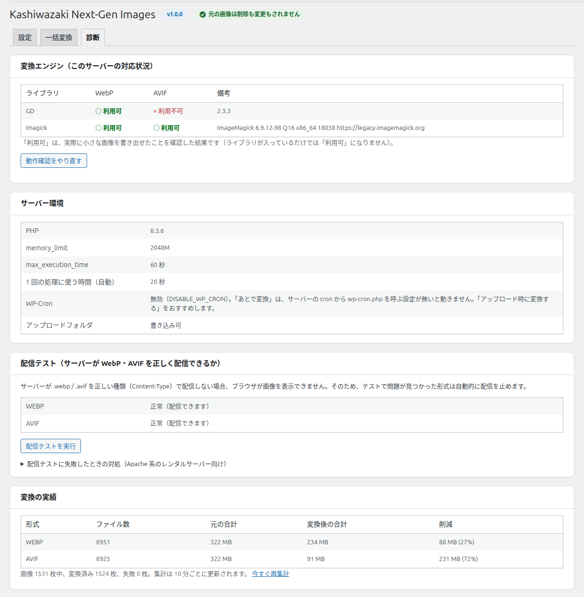

診断タブ
このサーバーで WebP・AVIF を作れるか、正しく表示できるか、どれだけ軽くなったかを確かめる画面です。

変換エンジン（このサーバーの対応状況）
画像を作る道具（GD・Imagick）ごとに、WebP と AVIF を作れるかを表示します。
| 列 | 意味 |
|---|---|
| ライブラリ | 画像を作る道具の名前（GD・Imagick） |
| WebP / AVIF | 「○ 利用可」= 実際に小さな画像を書き出せた／「× 利用不可」= 書き出せない |
| 備考 | 道具の版。入っていなければ「未導入」 |
「利用可」は、実際に小さな画像を書き出せたことを確認した結果です（道具が入っているだけでは「利用可」になりません）。AVIF を作れないときは「AVIF が利用不可でも、WebP だけで動作します。…」と表示されます。
動作確認をやり直す
書き出しのテストをやり直します。
| 使う場面 | サーバーの PHP の設定を変えたり、道具を追加したりしたあと |
| 押したあと | 「処理中…」と表示され、終わると画面が読み込み直されます。失敗したときはボタンの横にメッセージが出ます |
サーバー環境
| 項目 | 意味 |
|---|---|
| PHP | サーバーの PHP の版 |
| memory_limit | 1 回の処理で使えるメモリの上限。大きな画像の変換に関わります |
| max_execution_time | 1 回の処理にかけられる時間の上限（「◯ 秒」か「無制限」） |
| 1 回の処理に使う時間（自動） | 一括変換などで 1 回に使う時間。上の時間の半分（5〜20 秒）を自動で使います |
| WP-Cron | WordPress の予約処理が動くか。「無効」のときは、「あとで自動」の変換が動きません。「アップロード時（おすすめ）」を選んでください |
| アップロードフォルダ | 「書き込み可」か「書き込み不可（変換ファイルを保存できません）」 |
配信テスト（サーバーが WebP・AVIF を正しく配信できるか）
サーバーが .webp・.avif を正しい種類で送らないと、ブラウザが画像を表示できません。そのため、テストで問題が見つかった形式は自動で表示を止めます。
| 表示 | 意味 | 表示を続けるか |
|---|---|---|
| 正常（配信できます） | 正しく送れています | 続ける |
| 注意（種類の指定が不正ですが、ブラウザが補って表示できる見込みです） | 種類の指定が正しくないが、ブラウザが補える状態 | 続ける |
| 問題あり（この形式の配信を止めています） | ブラウザが表示できない状態 | 止める |
| 未確認 | まだテストしていない、または通信できなかった | 続ける |
表示の後ろに「 — 」で、届いた種類や通信のエラーなどの補足が付くことがあります。
配信テストを実行
配信テストをやり直します。
| 押したあと | 「処理中…」のあと、表の表示が新しくなります |
| 「問題あり」のとき | 直したあとにこのボタンで再テストするまで、その形式の表示は止まったままです |
配信テストに失敗したときの対処（Apache 系のレンタルサーバー向け）
この見出しを押すと開きます。WordPress を置いているフォルダの .htaccess に、表示された行を書き足してから、もう一度テストしてください。
<IfModule mod_mime.c>
AddType image/webp .webp
AddType image/avif .avif
</IfModule>.htaccess を書き換えるとき
書き換える前に、元のファイルを控えてください。わからない場合は、サーバー会社に「WebP と AVIF を正しい種類で配信する設定」を問い合わせてください。
変換の実績
| 列 | 意味 |
|---|---|
| 形式 | WEBP・AVIF |
| ファイル数 | その形式で作ったファイルの数（画像のサイズ違いも 1 つずつ数えます） |
| 元の合計 | その形式を作った元の画像の容量の合計 |
| 変換後の合計 | 作ったファイルの容量の合計 |
| 削減 | 減った容量と、その割合 |
表の下に「画像 ◯ 枚中、変換済み ◯ 枚、失敗 ◯ 枚。集計は 10 分ごとに更新されます。」と表示されます。「今すぐ再集計」を押すと、その場で数え直します。変換や削除をしたあとも数え直されます。